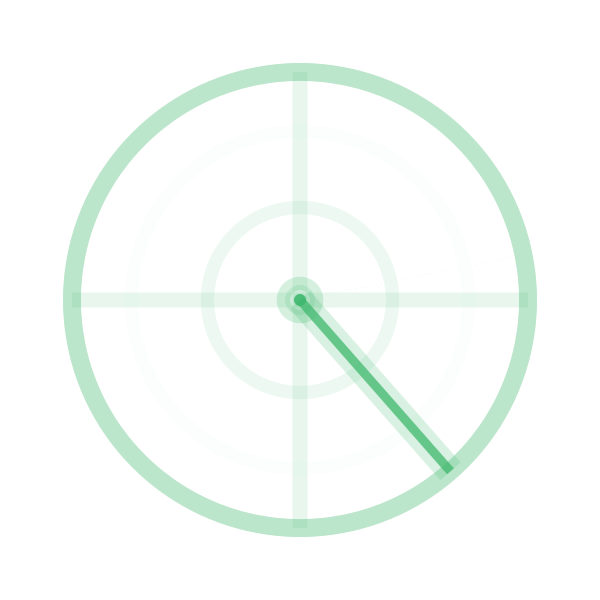
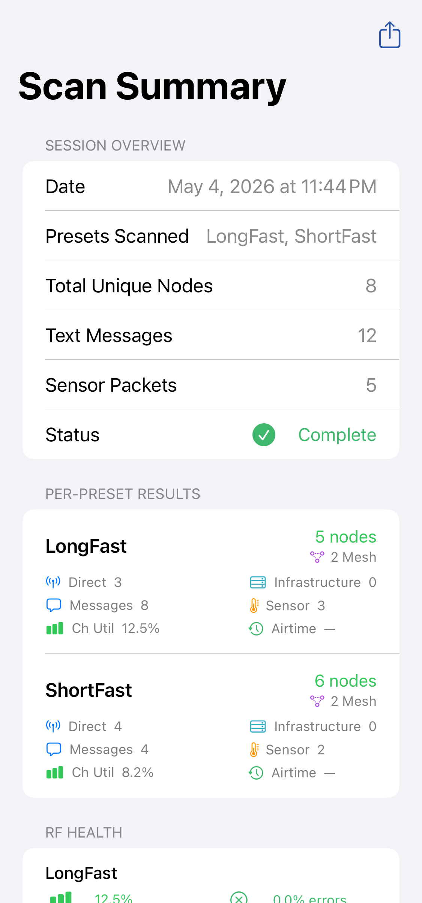

Local Mesh Discovery scans your area to find nearby Meshtastic radios operating on different frequency settings. Use it to identify which LoRa configuration is most active in your location before setting up a new node.
The scanner switches through a series of LoRa modem presets and frequency slots, listens for a set period on each, and records how many nodes it hears and how busy the airwaves are (channel utilisation). It then presents a ranked list of settings ordered by activity.
On supported devices running iOS 26+, the on-device AI assistant analyses the scan results and recommends the best configuration for your location — no internet connection required.


| Column | Description |
|---|---|
| Preset | LoRa modem preset (e.g., Long Fast, Long Slow) |
| Nodes Heard | Number of distinct nodes detected on this setting |
| Channel Utilisation | Percentage of airtime used — higher means more active |
| Recommendation | ✅ Best match for your area |
Tap a result row and then Apply Setting to configure your connected radio to match the most active setting in your area. This updates the LoRa configuration on the radio directly.